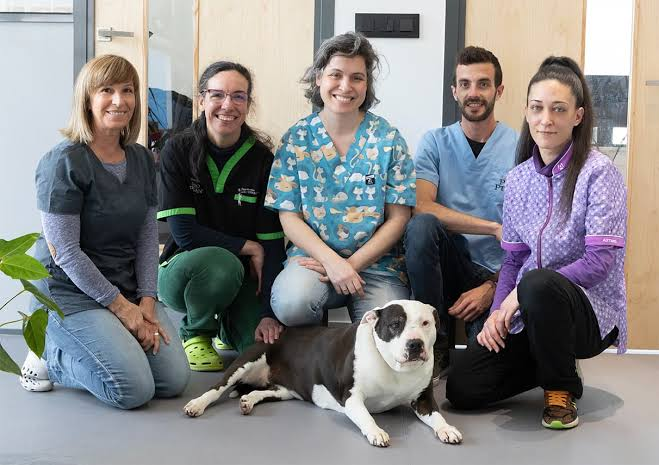

Sobre Nosotros
En Veterinaria San Marcos nos dedicamos con pasión y profesionalismo al cuidado integral de tus mascotas.
Contamos con un equipo médico capacitado y apasionado por los animales, equipado con la mejor tecnología para ofrecer consultas, cirugías, desparasitación, vacunación y servicios de peluquería de la más alta calidad.
Ubicados en Av. Los Zapadores 904, abrimos nuestras puertas todos los días para velar por la salud y felicidad de los integrantes más peludos de tu familia.

Nuestra Misión
Proporcionar servicios de salud animal con excelencia médica, empatía y compromiso social, brindando tranquilidad a los dueños y una excelente calidad de vida a sus mascotas.
Nuestra Visión
Ser la clínica veterinaria referente en la Región Metropolitana, reconocida por la innovación en tratamientos médicos, el amor por los animales y la atención personalizada.